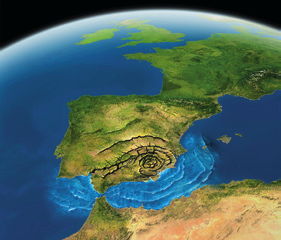

La geosfera es la parte de la Tierra que está formada por rocas. En la superficie de la geosfera hay dos tipos de regiones: los continentes, con valles y montañas, y los fondos oceánicos, con elevaciones (como las dorsales oceánicas) y depresiones (como las fosas oceánicas).
La diferenciación de la geosfera en capas se produjo en la etapa final de la formación de la Tierra.
Existen dos clases de métodos que permiten conocer el interior de la geosfera.
La energía que liberan los terremotos se transmite mediante ondas sísmicas. Los cambios en la velocidad de propagación indican variaciones en la composición y estado de agregación de las rocas.
La temperatura se eleva con la profundidad. Sin embargo, este aumento no es constante, sino que presenta diferencias que indican cambios en las características de las rocas.
El estudio de los meteoritos que llega a la Tierra nos permite conocer la composición química de las rocas del interior del planeta, ya que se formaron a la vez que la Tierra.